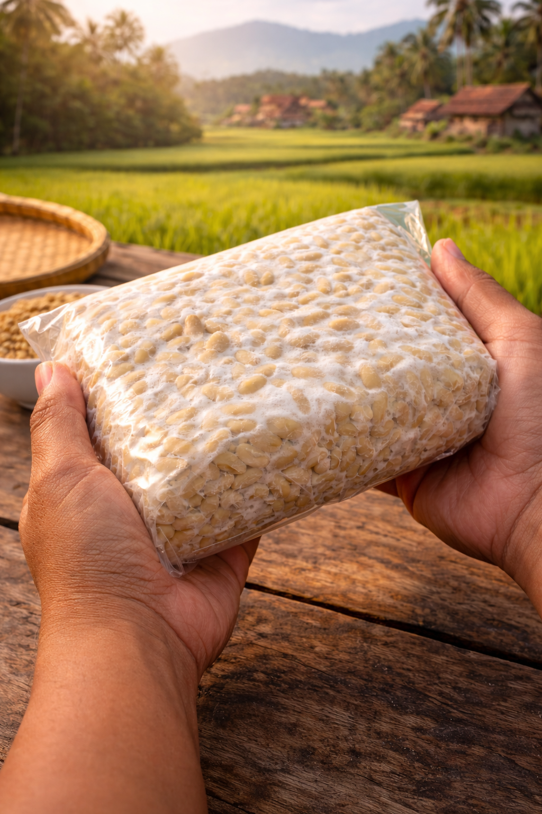
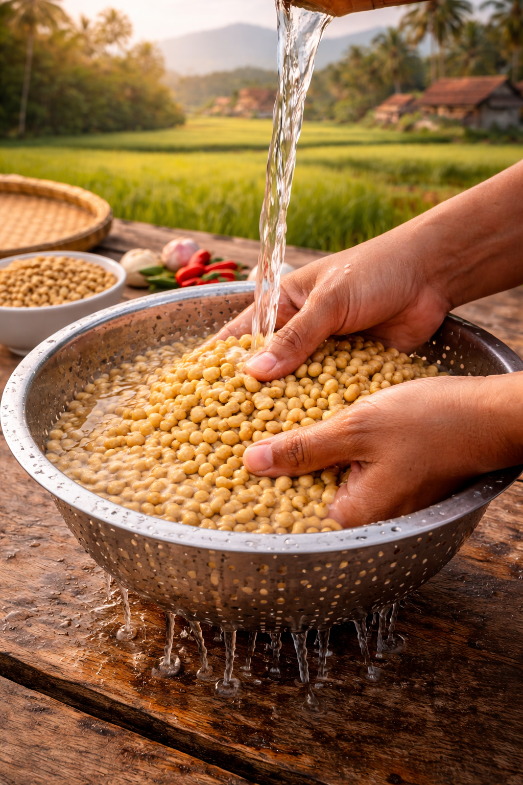

Tempe yang menggunakan gabungan berbagai jenis kacang lebih unik dibandingkan tempe yang menggunakan satu jenis kacang. Rasa yang lebih unik, khas, dan tekstur yang renyah membuat banyak orang selera.
Learn More
Tempe merupakan makanan yang sangat terkenal dan sangat umum diIndonesia. Tempe dapat ditemukan dari Sabang sampai Merauke. Tempe sudah ada sejak abad ke-16 di Jawa Tengah. Tempe memiliki rasa yang khas, aroma dari ragi tempe/Jamur Rhizopus Sp. yang khas, dan tekstur yang begitu unik. Tempe pada umumnya dimakan menggunakan sampingan seperti kecap, dan sambal. Proyek yang dilakukan ini merupakan proyek Bioteknologi. Tempe merupakan sebuah produk yang dihasil dari Bioteknologi Konvensional. Dalam proyek ini, terdapat dua perbandingan yaitu tempe yang menggunakan empat jenis kacang digabungkan (kacang kedelai, kacang tanah, kacang mete, kacang hijau) dan tempe yang menggunakan dua jenis kacang digabungkan (kacang kedelai dan kacang hijau). Dalam proyek ini sangat ingin tau perbandingan rasa, aroma, dan tekstur pada kedua tempe.
1. Kacang kedelai di rendam selama 1 jam kemudian direbus selama 40 menit.
2. Kacang kedelai di bilas bersih 1 kali kemudian di rendam selama 24 jam di tempat yang tertutup.
3. Kacang hijau di cuci bersih kemudian di rendam selama 24 jam.
4. Setelah 24 jam, kacang kedelai di rebus lagi selama 40 menit kemudian di bersihkan kulit ari nya dan di dinginkan selama 2 jam.
5. Kacang hijau yang telah di rendam selama 24 jam, di rebus selama 30 menit dan di dinginkan.
6. Selanjutnya, kacang tanah di rebus selama 40 menit dan di buang kulit arinya.
7. Kacang mete di rebus selama 20 menit dan di dinginkan.
8. Setelah semua bahan di dinginkan dan telah kering, kacang mete dan kacang tanah di potong.
9. Kemudian, seluruh bahan kacang di campur.
10. Setelah semua kacang di campur, di taburkan tepung beras dan ragi tempe secara merata.
11. Masukkan kacang yang sudah di taburkan tepung beras dan ragi tempe ke dalam wadah plastik.
12. Kemudian lakukan hal yang sama untuk tempe yang menggunakan kacang kedelai dan kacang hijau.
13. Selanjutnya, amati perubahan tekstur pada tempe selama proses fermentasi yang terjadi pada kedua tempe selama 24 hingga 30 jam.
14. Terakhir, amati dan ketahui perbedaan rasa, aroma, dan tekstur pada kedua tempe yang sudah di goreng.
Kedua tempe pun jadi dengan rasa, aroma, dan tekstur yang berbeda.
